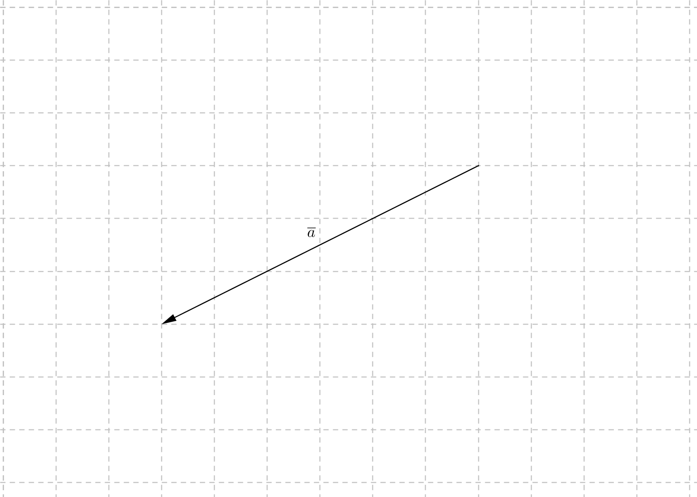
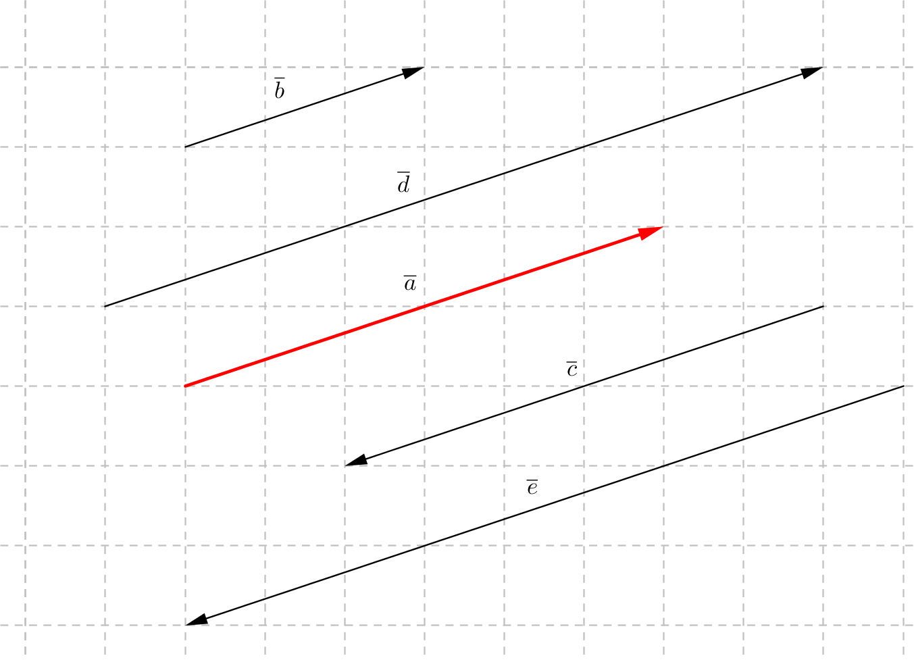
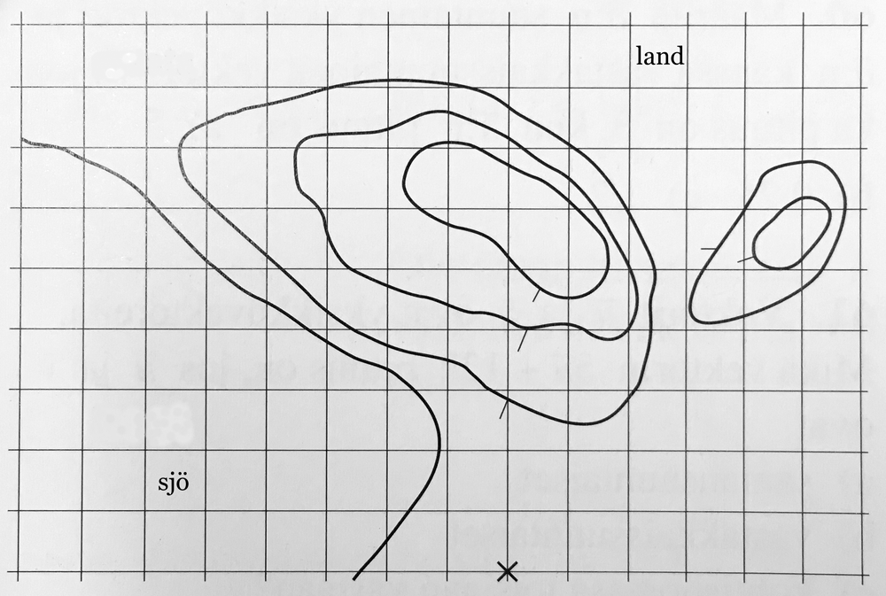

3. Ett reellt tal gånger en vektor
Vi utgår från vektorn \( \overline{a} \).

Rita vektorerna \( 2\overline{a} \), \( \dfrac{1}{3}\overline{a} \), \( -\dfrac{1}{3}\overline{a} \) och \( \dfrac{4}{3}\overline{a} \).
Då vi multiplicerar en vektor med ett reellt tal ändras längden för vektorn. Då det reella talet \( r \) är
- positivt är \( r\overline{a} \) lika riktad med \( \overline{a} \)
- negativt är \( r\overline{a} \) olika riktad med \( \overline{a} \).
Längden av vektorn \( \mid r \overline{a}\mid =\mid r \mid \overline{a}\mid \).
Om \( r=0 \) eller om \( \overline{a} \) är en nollvektor blir \( r\overline{a} \) en nollvektor.
Exempel 1 Punkten P delar sträckan AB i förhållandet 2:5. Uttryck \( \overrightarrow{AP} \) och \( \overrightarrow{PB} \) som delar av \( \overrightarrow{AB} \).
Multiplikation av vektorer med reella tal är associativt. Låt \( r \) och \( s \) vara reella tal och \( \overline{a} \) en vektor. Då gäller \( r(s\overline{a}) =(rs)\overline{a} \).
Till exempel: \( -2(3\overline{a})=(-2\cdot 3)\overline{a}=-6\overline{a} \).
För multiplikation av vekorer med reella tal gäller även distributiva lagen. \( (r+s)\overline{a} = r\overline{a} + s\overline{a} \).
Till exempel: \( 3\overline{a}-2\overline{a} = (3-2)\overline{a} = \overline{a} \).
Vidare gäller följande \( r(\overline{a}+\overline{b}) = r\overline{a} + r\overline{b} \).
Till exempel: \( -3(\overline{a} - 2\overline{b}) = -3\overline{a} +6\overline{b} \).
Exempel 2 Punkten \( P \) delar sträckan \( AB \) i förhållandet 1:7. Låt \( O \) vara en punkt i planet. Uttryck vektorn \( \overrightarrow{OP} \) som delar av \( \overline{a}=\overrightarrow{OA} \) och \( \overline{b}=\overrightarrow{OB} \).
Enhetsvektor
Enhetsvektorer är de vektorer som har längden 1. Enhetsvektorn för \( \overline{a}^0 = \dfrac{1}{\mid \overline{a}\mid }\overline{a} \).
Exempel 3 Vektorn \( \overline{a} \) har längden 8 och vektorn \( \overline{b} \) har längden 6. Uttryck vektorn \( \overline{b} \) med hjälp av \( \overline{a} \) då
- \( \overline{a} \) och \( \overline{b} \) är lika riktade,
- \( \overline{a} \) och \( \overline{b} \) är olika riktade.
Lösning
För att uttrycka \( \overline{b} \) med hjälp av \( \overline{a} \) så behöver vi vektorn \( \overline{a} \) som en enhet lång. Vi vill ha \( \overline{a} \):s enhetsvektor.
\( \overline{a}^0=\dfrac{1}{\mid \overline{a}\mid}\overline{a} = \dfrac{1}{8}\overline{a} \).
- \( \overline{b}=6 \cdot \dfrac{1}{8}\overline{a} = \dfrac{3}{4}\overline{a} \). Talet framför \( \overline{a} \) måste vara positivt eftersom \( \overline{a} \) och \( \overline{b} \) är lika riktade.
- \( \overline{b}=6 \cdot (-\dfrac{1}{8}\overline{a}) = -\dfrac{3}{4}\overline{a} \). Talet framför \( \overline{a} \) måste vara negativt eftersom \( \overline{a} \) och \( \overline{b} \) är olika riktade.
Uppgifter
Uttryck vektorerna \( \overline{b} \), \( \overline{c} \), \( \overline{d} \) och \( \overline{e} \) med hjälp av \( \overline{a} \).

\( \overline{b}=\dfrac{1}{2}\overline{a} \)
\( \overline{c}=-\overline{a} \)
\( \overline{d}=\dfrac{3}{2}\overline{a} \)
\( \overline{e}=-\dfrac{3}{2}\overline{a} \)
- Punkten P delar sträckan AB i förhållandet 2:1. Uttryck \( \overrightarrow{AP} \) och \( \overrightarrow{PB} \) som delar av \( \overrightarrow{AB} \).
\( \overrightarrow{AP}=\dfrac{2}{2+1}\overrightarrow{AB} =\dfrac{2}{3}\overrightarrow{AB} \)
\( \overrightarrow{PB}=\dfrac{1}{2+1}\overrightarrow{AB}=\dfrac{1}{3}\overrightarrow{AB} \) - Punkten \( P \) delar sträckan \( AB \) i förhållandet 3:5. Låt \( O \) vara någon punkt som inte är på linjen. Uttryck vektorn \( \overrightarrow{OP} \) med hjälp av vektorerna \( \overline{a}=\overrightarrow{OA} \) och \( \overline{b}=\overrightarrow{OB} \).
Rita skiss och bygg vidare från \( \overrightarrow{OA} \) och \( \overrightarrow{OB} \).
Vi får att
\( \begin{array}{rcll} \overrightarrow{OP} & = & \overrightarrow{OA} + \overrightarrow{AP} \\ & = & \overline{a} + \frac{3}{3+5} \overrightarrow{AB} \\ & = & \overline{a}+ \frac{3}{8}(-\overline{a}+\overline{b}) \\ & = & \overline{a}-\frac{3}{8}\overline{a}+\frac{3}{8}\overline{b} \\ & = & \frac{5}{8}\overline{a}+\frac{3}{8}\overline{b} \end{array} \)
Det är ingen skillnad om vi går via A eller B. Vi får samma resultat: \( \dfrac{5}{8}\overline{a} +\dfrac{3}{8}\overline{b} \).
- I vilket förhållande delar \( P \) sträckan \( AB \) då
- \( \overrightarrow{AP} = \dfrac{1}{3}\overrightarrow{AB} \) .
Förhållandet är 1:2.
- \( \overrightarrow{AP} = \dfrac{2}{5}\overrightarrow{AB} \) .
Förhållandet är 2:3.
- \( \overrightarrow{AB} = \dfrac{3}{2}\overrightarrow{AP} \) .
Förhållandet är 2:1.
- \( \overrightarrow{AP} = \dfrac{1}{3}\overrightarrow{AB} \) .
- Uttryck vektorn \( \overrightarrow{OP} \) som delar av \( \overline{a} \) och \( \overline{b} \) då P delar sträckan AB i förhållandet 2:3. Låt \( O \) vara en punkt i planet och \( \overline{a}=\overrightarrow{OA} \) och \( \overline{b}=\overrightarrow{OB} \)
Rita en bild och gå via \( \overrightarrow{OA} \) och \( \overrightarrow{AP} \) .
Vi får att
\( \begin{array}{rcll} \overrightarrow{OP} & = & \overrightarrow{OA} + \overrightarrow{AP} \\ & = & \overline{a} + \frac{2}{2+3} \overrightarrow{AB} \\ & = & \overline{a} + \frac{2}{5} (-\overline{a} +\overline{b}) \\ & = & \overline{a} - \frac{2}{5}\overline{a} +\frac{2}{5}\overline{b} \\ & = & \frac{3}{5}\overline{a} +\frac{2}{5}\overline{b} \\ \end{array} \)
Vi får samma svar oberoedene vilken väg som vi går, via A eller B. Svaret är \( \dfrac{3}{5}\overline{a}+\dfrac{2}{5}\overline{b} \).
Bestäm punkten där vi stannar då vi startar från origo och rör oss längs med \( \overline{a} \) och \( \overline{b} \)

- \( 2\overline{a} +\overline{b} \) .
Punkten är \( (4,-3) \).
- \( -\overline{a} -\overline{b} \) .
Punkten är \( (-1,1) \).
- \( \dfrac{1}{2}\overline{a} -2\overline{b} \) .
Punkten är \( (5\dfrac{1}{2}, -3) \) .
- \( 2\overline{a} +\overline{b} \) .
Vi låter vektorerna \( \overline{a} \), \( \overline{b} \) och \( \overline{c} \) ha följande notation: \( \overline{a} = 60 \) meter österut, \( \overline{b} = 50 \) meter norrut och \( \overline{c} = 20 \) meter uppåt.
Du startar från krysset på kartan. Din totala färd som du färdas är angivet med ett uttryck. Var stannar du? På marken, i luften, i vattnet eller i marken?

En ruta motsvaras av 10 meter och en höjdkurva är 5 meter.
- \( -\dfrac{1}{6}\overline{a} \)
Vi färdas 10 m västerut. Vi är på marken.
- \( 5(-\dfrac{1}{6}\overline{a})+\overline{b} \)
Vi färdas 50 m västerut och 50 m norrut. Vi är på sjön.
- \( \dfrac{1}{\sqrt{2}}\cdot 5(-\dfrac{1}{6}\overline{a})+\overline{b} \)
Vi färdas \( \dfrac{5}{\sqrt{2}} \cdot 10 \approx 35,4 \) m västerut och 50 m norrut. Vi är i marken, kullen.
- \( 2\overline{b} + \dfrac{2}{3}(\overline{a}-3\overline{b}) \)
Då vi förenklar får vi \( \dfrac{2}{3}\overline{a} \). Vi färdas \( \dfrac{2}{3} \cdot 60 = 40 \) meter österut. Vi är på marken.
- \( (\overline{c}+2\overline{b}) + \dfrac{2}{3}(\overline{a}-3\overline{b}+\dfrac{3}{2}\overline{c}) \)
Då vi förenklar får vi \( \dfrac{2}{3}\overline{a} +2\overline{c} \). Vi 40 meter österut och 40 m upp i luften.
- \( -\dfrac{1}{6}\overline{a} \)
- Vektorerna \( \overline{a} \) och \( \overline{b} \) är enhetsvektorer. Bestäm längden av \( 4\overline{a}+5\overline{b} \) då
- \( \overline{a} \) och \( \overline{b} \) är lika riktade.
Eftersom \( \mid \overline{a} \mid =1 \) och \( \mid \overline{b} \mid =1 \) och att \( \overline{a} \) och \( \overline{b} \) är lika riktade får vi att \( 4\overline{a}+5\overline{b} = 4\cdot 1 +5\cdot 1 =9 \).
- \( \overline{a} \) och \( \overline{b} \) är olika riktade.
Eftersom \( \mid \overline{a} \mid =1 \) och \( \mid \overline{b} \mid =1 \) och att \( \overline{a} \) och \( \overline{b} \) är olika riktade får vi att \( \mid 4\overline{a}-5\overline{b}\mid = \mid 4\cdot 1 -5\cdot 1\mid =\mid-1\mid =1 \).
- \( \overline{a} \) och \( \overline{b} \) är vinkelräta.
Eftersom \( \mid \overline{a} \mid =1 \) och \( \mid \overline{b} \mid =1 \) och att \( \overline{a} \) och \( \overline{b} \) är vinkelräta utnyttjar vi Pythagoras får vi att \( \mid 4\overline{a}+5\overline{b}\mid = \sqrt{(4\cdot 1)^2+(5\cdot 1)^2} =\sqrt{41} \approx 6,40 \) l.e.
- \( \overline{a} \) och \( \overline{b} \) är lika riktade.
- Antag att \( \mid \overline{a} \mid = 4 \), \( \mid \overline{b} \mid = 6 \) och \( \mid \overline{c} \mid = 8 \) samt att \( \overline{a} \uparrow \uparrow \overline{b} \) och att \( \overline{a} \uparrow \downarrow \overline{c} \). Uttryck
- Enhetsvektorerna \( \overline{a}^0 \), \( \overline{b}^0 \) och \( \overline{c}^0 \) med hjälp av vektorerna \( \overline{a} \), \( \overline{b} \) och \( \overline{c} \).
\( \overline{a}^0 = \dfrac{1}{\mid \overline{a} \mid}\overline{a} =\dfrac{1}{4}\overline{a} \)
\( \overline{b}^0 = \dfrac{1}{\mid\overline{b}\mid}\overline{b} =\dfrac{1}{6}\overline{b} \)
\( \overline{c}^0 = \dfrac{1}{\mid \overline{c}\mid}\overline{c} =\dfrac{1}{8}\overline{c} \)
- Vektorerna \( \overline{b} \) och \( \overline{c} \) med hjälp av \( \overline{a} \) .
\( \overline{b} = 6\cdot \overline{a}^0 = 6\cdot \dfrac{1}{4}\overline{a} = \dfrac{6}{4}\overline{a} = \dfrac{3}{2}\overline{a} \)
\( \overline{c}= 8\cdot \overline{a}^0 = 8(-\dfrac{1}{4}\overline{a}) =-2\overline{a} \)
- Enhetsvektorerna \( \overline{a}^0 \), \( \overline{b}^0 \) och \( \overline{c}^0 \) med hjälp av vektorerna \( \overline{a} \), \( \overline{b} \) och \( \overline{c} \).
- Antag att \( \overline{a} \not=\overline{0} \) och \( \overline{b} \not=\overline{0} \) och att påståendena i deluppgifterna stämmer. Jämför längden och riktningen för vektorn \( \overline{a} \) med längden och riktningen för vektorn \( \overline{b} \).
Behandla uttrycken som ekvationer, lös modigt på.
- \( 2\overline{a}-\overline{b}=\overline{a}+\overline{b} \) .
Vi får att
\( \begin{array}{rcll} 2\overline{a}-\overline{b} & = & \overline{a}+\overline{b} \\ \overline{a} = 2\overline{b} \\ \end{array} \)
\( \overline{a} \) och \( \overline{b} \) är lika riktade. \( \overline{a} \) är dubbelt så lång som \( \overline{b} \).
- \( \overline{a} +2(\overline{a}-\overline{b})=-\overline{b} \) .
Vi får att
\( \begin{array}{rcll} \overline{a} +2(\overline{a}-\overline{b}) & = & -\overline{b} \\ \overline{a} +2\overline{a}-2\overline{b} & = & -\overline{b} \\ 3\overline{a} & = & \overline{b} \\ \end{array} \)
\( \overline{a} \) och \( \overline{b} \) är lika riktade. \( \overline{a} \) är en tredjedel av \( \overline{b} \):s längd.
- \( -2(\overline{a} -\overline{b})-3\overline{a}=-(\overline{a}-2\overline{b})-4\overline{a} \)
Vi får att
\( \begin{array}{rcll} -2(\overline{a} -\overline{b})-3\overline{a} & = & -(\overline{a}-2\overline{b})-4\overline{a} \\ -2\overline{a} +2\overline{b}-3\overline{a} & = & -\overline{a}+2\overline{b}-4\overline{a} \\ -5\overline{a} +2\overline{b} & = & -5\overline{a}+2\overline{b} \\ 0 & = & 0\\ \end{array} \)
Alla vektorer \( \overline{a} \) och \( \overline{b} \) löser ekvationen. Vi kan inte säga något om \( \overline{a} \) och \( \overline{b} \).
- \( 2\overline{a}-\overline{b}=\overline{a}+\overline{b} \) .
- Punkten \( P \) delar sträckan \( AB \) i förhållandet \( m:n \). Låt \( O \) vara en punkt i planet och beteckna \( \overline{a}=\overrightarrow{OA} \), \( \overline{b}=\overrightarrow{OB} \) och \( \overline{p}=\overrightarrow{OP} \). Visa att \( \overline{p}=\dfrac{n\overline{a}+m\overline{b}}{m+n}. \) .
Rita bild och bilda modigt ett förhållande. Arbeta vidare från det.
Situationen är följande:

Vi får att
\( \begin{array}{rcl} \overline{p} & = & \overrightarrow{OP} = \overrightarrow{OA}+\overrightarrow{AP} \\ & = & \overline{a}+\frac{m}{m+n}\overrightarrow{AB} \\ & = & \overline{a}+\frac{m}{m+n}(-\overline{a}+\overline{b}) \\ & = & \frac{m+n}{m+n}\overline{a}-\frac{m}{m+n}\overline{a}+\frac{m}{m+n}\overline{b} \\ & = & \frac{n}{m+n}\overline{a}+\frac{m}{m+n}\overline{b} \\ & = & \dfrac{n\overline{a} +m\overline{b}}{m+n} \\ \end{array} \)